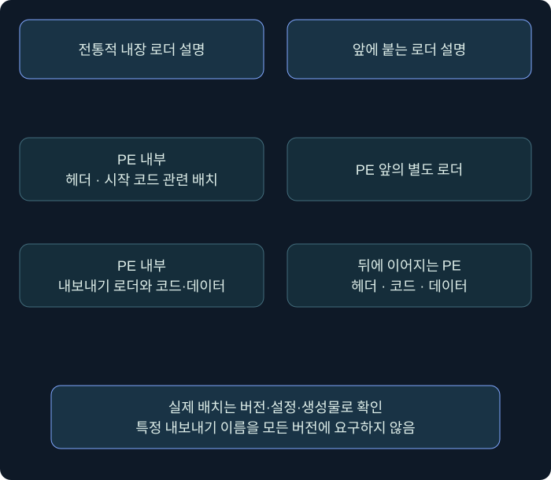
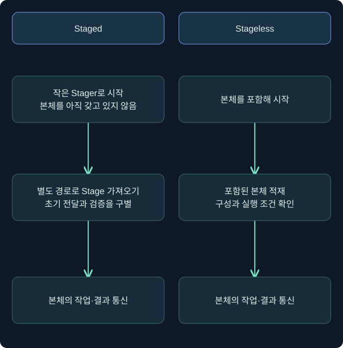

페이로드와 로더: staged·stageless·출력 형식을 단계별로 읽기
PE와 reflective loader, 앞에 붙는 로더, 본체 전달·보호 경계, 출력 형식·아키텍처·종료 설정과 생성물 기록을 설명합니다.
1. 파일·로더·에이전트·통신은 다른 층입니다
하나의 실행 파일을 받았을 때 그 파일 전체를 Beacon이라고 부르면 세부 구조를 놓칠 수 있습니다. 시작을 담당하는 포장, 메모리에 올리는 로더, 실제 작업을 수행하는 에이전트, 통신 설정이 서로 연결되지만 같은 층은 아닙니다. 이번 강의는 이 층을 나누어 읽는 방법을 설명합니다.
페이로드(payload)는 실행을 통해 수행하려는 기능을 담은 부분을 뜻합니다. 익스플로잇(exploit)은 취약점을 이용해 실행 기회를 만드는 코드나 방법을 가리킵니다. 두 용어가 항상 한 파일을 뜻하지 않습니다. 정상 기능을 사용자가 실행하는 형태도 있어 모든 페이로드 전달이 취약점 악용인 것은 아닙니다.
이 강의에서는 실행 구조·형식·수명과 조사 질문을 다룹니다. 실제 Beacon 생성물, 셸코드 바이트, 메모리 적재 코드를 제공하거나 실행하지 않았습니다. 용량 예제는 계산을 위한 가상 수치이며 특정 제품 빌드의 실측 크기가 아닙니다.
2. PE 로더가 해결하는 문제를 떠올립니다
앞 장의 PE 파일에는 섹션, 가져오기, 재배치와 진입점 정보가 있었습니다. 파일 바이트를 메모리 어딘가에 복사하는 것만으로 모든 프로그램이 곧바로 실행되는 것은 아닙니다. 필요한 구조를 배치하고 의존 관계와 주소를 맞추는 작업이 필요합니다.
로더(loader)는 실행에 필요한 내용을 적재하고 준비하는 역할을 합니다. 일반적인 Windows DLL 로드와 별도로, 메모리 안의 PE를 해석해 준비하는 반사적 적재(reflective loading)라는 기법도 있습니다. 이름에 reflective가 붙는다고 PE의 자료 구조와 실행 조건이 사라지는 것은 아닙니다.
| 질문 | 파일 분석에서 볼 단서 | 메모리 분석에서 볼 단서 |
|---|---|---|
| 무엇을 담았나요? | PE 헤더·섹션·포장 형식 | 적재된 영역과 바이트 |
| 무엇을 준비하나요? | 로더 관련 코드와 참조 | 배치·의존 모듈·보호 상태 |
| 어디로 실행이 이어졌나요? | 진입점·내보내기 등 | 스레드 상태와 실제 실행 위치 |
| 어떤 서버와 연결되나요? | 구성 후보 | 실행 시점의 연결과 통신 |
정적 파일에 어떤 기능이 있다는 사실과 실제 실행되었다는 사실을 구분합니다. 메모리에 코드가 있다는 사실만으로도 그 코드가 어느 스레드에서 언제 수행되었는지까지 보장할 수는 없습니다. 이번 장에서도 앞 장의 관측·가설 구분을 유지합니다.
3. 내장 로더와 앞에 붙는 로더를 구별합니다
전통적인 설명에서는 DLL 안에 ReflectiveLoader 같은 내보내기 함수를 두고, 작은 시작 코드가 이를 호출하는 구조를 만날 수 있습니다. 시작 코드가 DOS 헤더 일부를 사용하거나 덮어쓰는 형태의 설명도 있습니다. 이런 구체적인 배치가 모든 버전의 필수 구조라고 생각하면 안 됩니다.
Prepended loader는 로더가 PE 안에 포함된 구조 대신 PE 앞에 별도 코드로 붙는 배치입니다. 파일의 맨 앞이 반드시 MZ로 시작할 것이라는 기대와도 차이가 생길 수 있습니다. 전체 포장과 내부 PE를 어디서부터 읽는지 구별해야 합니다.

이 그림은 구조 위치의 개념도이며 실행 주소나 제작 순서를 제공하는 것이 아닙니다. 공식 4.11 발표는 기본 로더를 prepend/sRDI 계열로 바꾼 내용을 설명합니다. 같은 발표에서 기존 stomp 방식의 이후 지원 종료 계획도 언급하지만, 조사 대상이 어떤 로더를 썼는지는 실제 버전·생성 설정·생성물로 확인해야 합니다.
DoublePulsar나 sRDI라는 이름은 이 배치의 역사와 비교에서 등장합니다. 배치가 비슷하다는 사실은 같은 도구나 공격자가 만든 파일이라는 증거가 아닙니다. 특히 “앞에 코드가 있으므로 특정 공격 도구”라는 식으로 식별 기준을 단순화하면 안 됩니다. 사용자 정의 로더와 이후 버전의 변화도 고려합니다.
4. 위치 독립 코드와 포장 형식을 읽습니다
PIC(Position-Independent Code)는 특정한 고정 적재 주소에만 의존하지 않도록 만든 코드라는 뜻입니다. 보통 셸코드와 함께 언급되지만 모든 바이트열이 곧 PIC인 것은 아닙니다. 아키텍처·환경·API와 데이터에 대한 전제도 여전히 존재합니다.
제품에서 원시 바이트를 C나 C# 배열 문법으로 출력했다고, 그 바이트가 해당 언어의 소스 로직으로 바뀐 것은 아닙니다. 같은 기계어를 다른 표기로 포장했을 수 있습니다. Raw 출력과 이를 실행하는 EXE·DLL 포장을 구별하면 “출력 언어가 Python이니 Python 코드만 실행된다” 같은 오해를 피할 수 있습니다.
또한 자기 프로세스에서 적재·실행하는 것과 다른 프로세스에 주입하는 것은 다릅니다. 제품 설명의 단순한 메모리 할당·복사·스레드 실행 예제를 보았다는 이유로 다른 프로세스 경계를 넘었다고 기록하지 않습니다. 실제 대상 프로세스와 실행 관계를 확인해야 합니다.
5. Staged와 stageless는 어느 시점에 무엇을 갖고 있나요?
Stager는 더 큰 기능을 가져와 실행을 이어 주는 작은 초기 구성 요소입니다. Stage는 가져오는 본체입니다. Staged 방식은 이처럼 단계를 나누고, stageless 방식은 별도의 초기 다운로드에 의존하지 않도록 본체를 포함한 형태로 이해할 수 있습니다.

도시락으로 비유하면 작은 교환권을 먼저 보내 식사를 받아 오는 방식과 식사가 들어 있는 도시락을 처음부터 보내는 방식의 차이입니다. 교환권은 작지만 받아 오는 경로가 추가로 필요합니다. 도시락은 처음부터 크지만 그 추가 경로에 같은 방식으로 의존하지 않습니다.
| 비교 항목 | Staged | Stageless |
|---|---|---|
| 초기 구성 | 작은 stager와 별도 stage | 본체를 포함한 초기 구성 |
| 추가 전달 경로 | stage를 가져오는 단계 확인 | 같은 staging 단계가 필수는 아님 |
| 크기 | 초기 부분이 작을 수 있음 | 초기 생성물이 더 클 수 있음 |
| 실패 원인 | staging 단계와 이후 C2를 나눠 확인 | 적재·구성·후속 C2를 확인 |
| 정책 적용 | stager와 stage의 차이 검토 | 실제 포함된 구성과 기능 검토 |
stage를 가져오는 호스트와 이후 작업 통신 호스트는 같을 수도 다를 수도 있습니다. 여러 callback 호스트가 있어도 설명된 HTTP stager는 별도로 지정한 한 호스트에서 본체를 가져오는 구조입니다. 작은 stager가 전체 목록을 같은 방식으로 순환한다고 가정하지 않습니다. 프록시·리졸버·Guardrails의 적용 차이도 이 경계에서 확인합니다.
6. 크기·메모리 보호·암호화를 일반화하지 않습니다
가상으로 초기 구성 900바이트와 본체 300,000바이트를 비교하면 본체가 약 333배 큽니다. 이는 크기 제약이 staging 설계를 설명하는 이유가 될 수 있음을 보여 주는 계산입니다. “현재 모든 Beacon stager는 900바이트”라는 제품 사양이 아닙니다. 빌드·아키텍처·로더·옵션에 따라 크기는 바뀝니다.
작은 구성은 기능과 검증 절차에 제약이 있을 수 있습니다. 공식 보안 설명은 full stage의 공개키·세션키 기반 보호와 작은 stager의 보호를 구별합니다. stage의 보호가 존재한다는 사실만으로 최초 다운로드의 상대 검증까지 동일하다고 주장하지 않습니다.
공개키는 공유 가능한 암호키이며 대응하는 개인키로만 복호화할 수 있는 암호화 등에 사용됩니다. 공식 설명에서 Beacon은 서버 공개키로 메타데이터를 암호화하고, 그 안의 세션키가 이후 작업·출력 보호에 사용됩니다. 이 구조 설명이 “절대 가로채거나 분석할 수 없다”는 보장은 아닙니다. 버전·구현·키 관리·수집 상태를 따로 봅니다.
메모리 보호의 RWX는 읽기·쓰기·실행이 모두 가능한 상태이고, RW와 RX는 각각 읽기·쓰기 및 읽기·실행 상태입니다. 작은 stager의 구현과 full stage의 메모리 정책을 하나로 묶지 않습니다. 그렇다고 특정 보호 전환이 항상 존재하거나 탐지를 피한다고 보장해서도 안 됩니다. 실제 영역과 시각을 관측해야 합니다.
7. 생성 메뉴는 결과물의 역할로 읽습니다
메뉴 이름을 외우기보다 생성물이 무엇을 요구하고 어느 부분을 포함하는지 확인하면 버전이 달라도 이해하기 쉽습니다. 다음 표는 유형의 의미를 설명하며 생성·배포를 수행한 결과가 아닙니다.
| 유형 | 읽을 핵심 | 함께 확인할 전제 |
|---|---|---|
| HTML Application·HTA | HTML과 Windows 스크립팅 실행 문맥 | 실행 호스트·스크립팅 정책·실제 내용 |
| Office macro | Office 문서 안의 VBA 등 실행 논리 | Office·비트 수·매크로 정책·사용자 동작 |
| Stager Payload Generator | 작은 초기 구성의 배열·Raw 등 출력 | 별도 stage 경로와 적용되지 않는 옵션 |
| Stageless Payload Generator | 본체 포함 출력과 추가 구성 | 실제 선택한 아키텍처·종료 방식·조건 |
| Windows EXE | 실행 파일 포장 | PE·실행 문맥과 생성 옵션 |
| Windows Service EXE | 서비스 제어 관리자와 상호작용하는 실행 파일 | 일반 EXE와 다른 서비스 계약 |
| Windows DLL | DLL 형식 포장과 내보내기 | 어떤 함수가 어떤 방식으로 호출되는지 |
VBA(Visual Basic for Applications)는 Office 등에 포함된 자동화 언어입니다. HTA의 실행 방식이나 Office 정책은 환경에 따라 달라지므로, 예전 예제의 “항상 x86” 표시나 메뉴 구성을 모든 생성물과 버전에 확대하지 않습니다. 생성할 수 있다는 사실과 대상에서 실행 가능한 사실도 다릅니다.
코드 서명도 실행 파일의 안전성을 자동으로 증명하지는 않습니다. 서명이 검증되면 서명자와 서명 이후 무결성 등에 관한 근거가 되지만 실제 기능의 정당성은 별도 분석 대상입니다. 반대로 서명이 없다는 사실만으로 특정 공격 도구라고 판정하지 않습니다.
8. Exit Function과 System Call 설정을 해석합니다
Exit Function은 종료할 때 프로세스 전체와 해당 스레드 중 어느 범위의 수명에 영향을 줄지와 연결됩니다. ExitProcess는 호출 프로세스 종료, ExitThread는 호출 스레드 종료를 의미합니다. 이미 업무를 수행 중인 프로세스 안에 다른 코드가 함께 있는 경우에는 종료 범위 차이가 특히 중요합니다.
그러나 “스레드 종료를 골랐으니 모든 흔적과 자원이 정리된다”라는 결론은 아닙니다. 다른 스레드·할당·연결 상태가 남을 수 있고 구현별 정리도 확인해야 합니다. 프로세스를 종료했더라도 디스크 변경이나 원격 자원이 자동으로 되돌아간다고 보장하지 않습니다.
System Call 선택은 사용자 모드에서 운영체제 서비스를 요청하는 경로를 설명합니다. 공식 제품 표기의 None·Direct·Indirect를 읽을 때, 일반 Windows API 경로와 다른 호출 경로를 구별합니다. Nt로 시작하는 함수 이름을 호출했다는 사실만으로 직접 시스템 호출 구현을 입증하지는 않습니다. 함수 진입·분기·실제 전환 위치가 별도 분석 대상입니다.
Direct·Indirect 설정이 있더라도 모든 동작이 같은 방식으로 수행되거나 보안 모니터링을 무력화한다고 주장하지 않습니다. 이 강의에서는 옵션의 의미와 해석 한계를 설명하며 호출 구현이나 우회 코드를 만들지 않습니다. 앞 강의의 P/Invoke 선언과 시스템 호출 경로도 다른 층이라는 점을 기억하세요.
9. 생성물별 기록을 남기는 방법
여러 리스너·아키텍처의 생성물을 한꺼번에 출력하는 기능은 변형 수를 늘립니다. 파일 하나의 분석 결과를 모든 변형에 적용하면 안 됩니다. 실제 생성물이 있다면 서버 출처, 도구 빌드, 리스너·생성 옵션, 아키텍처, 해시와 생성 시각을 연결하는 편이 재현에 도움이 됩니다.
현재 4.13 변경 이력에는 생성물과 메타데이터를 서버에 보관하는 Payload Store가 나옵니다. 저장된 항목이 있다는 사실은 대상에서 실행되었다는 증거와 다릅니다. “생성됨”, “저장됨”, “전달됨”, “실행됨”, “결과 확인됨”의 상태를 나누어 기록합니다.
가상 분석 메모는 “파일 P는 본체 포함 생성물로 설명되었으나 실제 파일과 실행은 확인하지 못함”처럼 한계를 남길 수 있습니다. 확인하지 않은 파일에 해시나 실행 성공 시간을 만들어 붙이지 않습니다. 조사에서 파일·메모리·통신 증거가 연결될 때마다 그 출처와 시점을 추가합니다.
10. 복습과 바로 읽는 해설
복습 1. 익스플로잇과 페이로드는 같은 뜻인가요?
해설: 다릅니다. 익스플로잇은 취약점을 이용하는 방법·코드이고 페이로드는 실행해 수행하려는 기능입니다. 정상 기능을 통한 사용자 실행도 있어 모든 전달이 취약점 악용은 아닙니다.
복습 2. PE 바이트를 메모리에 복사하면 적재가 모두 끝나나요?
해설: 아닙니다. 배치·가져오기·재배치 등 필요한 준비가 있습니다. 바이트 존재, 적재 준비, 실제 실행도 각각 다른 확인 항목입니다.
복습 3. 모든 버전에서 ReflectiveLoader 내보내기가 필수인가요?
해설: 아닙니다. 앞에 별도로 붙는 로더와 사용자 정의 방식 등이 있습니다. 구체적인 버전·생성 설정·실제 배치를 확인해야 합니다.
복습 4. C# 배열로 출력되면 그 본체가 C# 프로그램이 되나요?
해설: 반드시 그렇지 않습니다. 같은 기계어 바이트를 C# 문법으로 표현했을 수 있습니다. 출력 표기와 내부 코드의 종류를 나누어 봅니다.
복습 5. stageless는 이후 네트워크 통신이 전혀 없다는 뜻인가요?
해설: 아닙니다. 본체를 별도로 가져오는 초기 staging 단계와 후속 작업·결과 통신은 다릅니다. 본체를 포함해도 이후 C2는 필요할 수 있습니다.
복습 6. full stage의 암호화 설명을 stager에도 적용해도 되나요?
해설: 안 됩니다. 공식 문서는 이 보호 경계를 구분합니다. 초기 다운로드의 검증과 이후 메타데이터·작업 보호를 따로 확인해야 합니다.
복습 7. ExitThread를 선택하면 모든 정리가 보장되나요?
해설: 보장되지 않습니다. 호출 스레드의 수명과 다른 자원·원격 변경·파일 상태는 다릅니다. 실제 종료·정리 결과를 검증합니다.
복습 8. 생성물이 Payload Store에 있으면 대상에서 실행되었나요?
해설: 그 사실만으로 알 수 없습니다. 생성·보관·전달·실행·결과 확인의 증거를 각각 연결해야 합니다.
11. 공식 근거와 다음 학습
확인일은 2026년 11월 3일입니다. 제품 생성물과 Windows 실행은 미검증이며 가상 크기와 개념도는 독립적인 교육 자료입니다.
- User-driven Attack Packages: 출력 유형과 생성 옵션의 의미.
- Payload Staging, Payload Security Features: stage·stager와 보호 경계.
- 4.11 공식 발표: 기본 reflective loader 배치 변화.
- 4.8 공식 발표: 제품의 시스템 호출 옵션 표기.
- 공식 변경 이력: 4.12·4.13의 추가 변화와 Payload Store.
다음 강의에서는 세션 표의 필드와 작업 상태, 출력 연결을 익히고 가상 기록을 읽는 오프라인 실습으로 이번 단원을 마무리합니다.